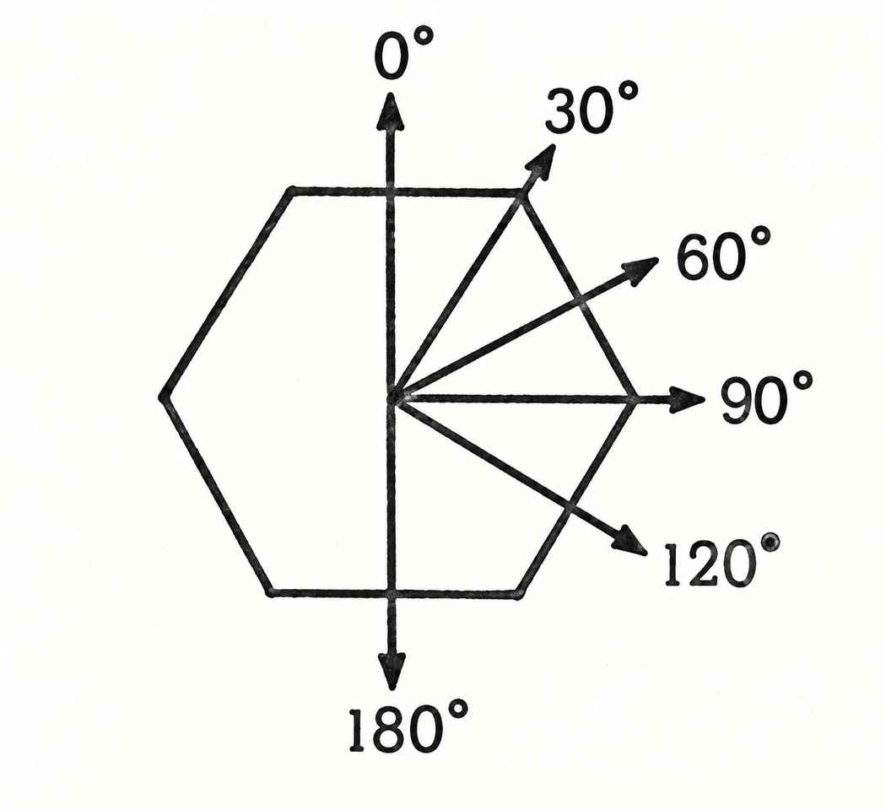
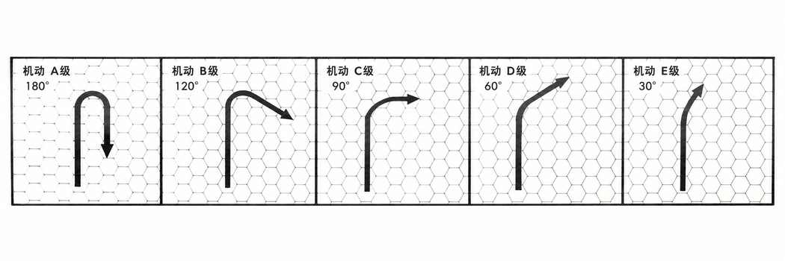

荒野探险 · Outdoor Exploration
陆地冒险 · Land Adventures

角色从起点出发，会经过不同地形，也会穿越类人／半人类人口密度不同的区域。地形会影响遇到怪物的频率和种类，人口密度同样决定遭遇的概率与种类。因此，DM 应在大比例地图上标示人口密度，或至少事先心中有数。遭遇概率的基础值如下：
遭遇概率 Chance of Encounter
| 人口密度 | 基础遭遇概率 |
|---|---|
| 相对稠密 | 1/20 |
| 中等至稀疏／巡逻区域 | 1/12 |
| 无人居住／荒野 | 1/10 |
按地形进行遭遇时段检定 Frequency of Encounter Chance Time Checks
| 地形 | 清晨 | 正午 | 傍晚 | 夜间 | 午夜 | 黎明前 |
|---|---|---|---|---|---|---|
| 平原 | × | × | ||||
| 灌木地 | × | × | × | × | ||
| 森林 | × | × | × | × | × | × |
| 沙漠 | × | × | × | |||
| 丘陵 | × | × | ||||
| 山地 | × | × | ||||
| 沼泽 | × | × | × | × | × | × |
“×”表示检定遭遇；“—”表示只有队伍人数超过 100 个生物时才检定。
日间时段包括清晨、正午与傍晚，分别约为队伍出发一小时后、旅途正中以及接近扎营时。夜间时段包括入夜、午夜与黎明前，分别对应睡眠开始、中段与结束。若某地形只有一两个遭遇检定时段，可以自行变动检定时间，以免玩家依赖他们不应掌握的信息。需要进行遭遇检定时，掷适当骰子；若结果为 1，即发生遭遇。然后查对应地形的表格，随机确定遭遇怪物。若 DM 已详细记录某区域的怪物分布，则通常无需随机确定，因为相关信息本应已有记录。
若确实发生遭遇，查表格附带的说明并遵循特别程序。遭遇方尝试躲避的规则见“战斗”中的“追击与躲避追击”。
遭遇距离 · Encounter Distance
若任一方遭遇突袭，遭遇距离应从通常距离中减去突袭值（由确定突袭的骰值决定）。通常遭遇距离为 6–24 尺（6d4）。例如突袭检定掷出 1，遭遇距离为 5–23 尺（6d4−1）；掷出 2，则为 4–22 尺，依此类推。突袭还会让突袭方获得等同于突袭骰值的免费行动轮，可移动、攻击、逃跑等，且对方无法回应（见“突袭”）。除突袭调整外，地形也会改变遭遇距离：
| 地形 | 遭遇距离调整 |
|---|---|
| 灌木地 | 每颗骰掷出 3 或 4，结果 −1 尺 |
| 森林 | 所有骰值均 −1 尺（可能掷出 0） |
| 沼泽 | 每颗骰掷出 2、3 或 4，结果 −1 尺 |
平原、沙漠、丘陵与山地不会改变遭遇距离，除非同时存在上述三类地形之一。若最终遭遇距离为 1 尺或更短，通常会立即发生正面冲突。
正面冲突 · Confrontation
正面冲突意味着冒险者与某个怪物近距离相遇，双方很可能会发生互动。但以下情况会改变结果：
1. 若怪物有智慧，且自认为弱于冒险队伍，就会始终设法避免冲突。 2. 若队伍突袭了怪物并选择逃跑，可以利用免费行动轮离开冲突距离，以躲开怪物。
正面冲突中的互动可以包括单独或组合采取的任何行动，例如谈判与反应、施法、投射武器攻击、近战等。
陆地移动 · Movement
其他章节已经给出移动速度，这些速度以队伍人数在 1–100 个生物之间为前提。若队伍超过 100 个生物，每多出或不足一整百个生物，就将每日移动距离减少 1 英里；但无论如何，移动速度都不应低于正常速度的 50%。
迷路 · Becoming Lost
若队伍没有熟悉当地乡野的向导、没有沿着河流或道路等明确路线前进，也没有使用绘制正确且精细的地图，就可能迷路。应在每日开始移动前，根据地形判定：
| 地形 | 迷路概率 | 迷失方向 |
|---|---|---|
| 平原 | 1/10 | 偏左或偏右 60° |
| 灌木地 | 3/10 | 偏左或偏右 60° |
| 森林 | 7/10 | 任意方向 |
| 崎岖地形 | 3/10 | 偏左或偏右 60° |
| 沙漠 | 4/10 | 偏左或偏右 60° |
| 丘陵 | 2/10 | 偏左或偏右 60° |
| 山地 | 5/10 | 偏左或偏右 120° |
| 沼泽 | 6/10 | 任意方向 |
队伍迷路后，掷 d6 确定移动方向：1–3 表示向左，4–6 表示向右。每个六角格边长代表 60°。若可能偏离 120°，再掷一次 d6：1–3 表示偏离 60°，4–6 表示偏离 120°。若可能向任意方向迷失，则掷一次 d6，以预定行进方向为 12 点方向，顺时针判读：1＝右前方，2＝右后方，3–4＝正后方，5＝左后方，6＝左前方。也就是说，一旦骰子确定队伍迷路，就绝不会意外地仍朝预定方向移动。

迷路队伍的处理 · Procedure for Lost Parties
一旦骰子显示队伍迷路，就确定其实际前进方向。若误入此前经过并绘制过地图的区域，队伍会意识到迷路；告诉玩家他们向某个方向移动，而非预定方向，并看到了地标、发现走错了路。
若队伍进入尚未探索并绘制地图的区域，则立即再次掷骰，判定第二天是否仍然迷路。若没有继续迷路，队伍会在第二天发现错误；但在此之前，应描述地形时假装他们确实朝预定方向移动，也就是说，地图上会错误地标记一个区域，直到后来才得以更正。若队伍第二天仍然迷路，就继续重复上述程序，直到不再迷路。此时，他们会知道自己没有沿预定方向（或一系列方向）移动，但不知道具体从哪里开始走错，只能原路折返，寻找最后一个正确绘制的地点，再从那里重新出发。
沿着正确地图行进的队伍不会迷路。这些程序只适用于探索未绘制地图的地形。
休息 · Rest
移动速度假设队伍每天都有充分休息，因此旅途中不需要额外安排一整天或更长的休息。但若超过正常速度移动，就必须在途中安排额外休息，且这些休息时间不包括旅途中的短暂停歇。
强行军 · Forced Movement
队伍可以强行军，移动距离最多达到每日正常移动距离的 两倍。队伍可以按每 10% 为一级，选择将每日移动速度额外提高 10%–100%。一旦额外移动累计达到正常速度的 100%，或队伍决定恢复普通速度（以先发生者为准），就必须强制休息。休息时间取决于强行军的累计比例：
| 强行军比例 | 强制休息 |
|---|---|
| 10%–30% | 每 10% 休息 1 小时 |
| 40%–60% | 每 10% 休息 2 小时 |
| 70%–100% | 每 10% 休息 3 小时 |
要计算强制休息所需时间，只需把休息时间总比例从正常每日移动距离中扣除。例如，休息时间为 30%，则第二天的移动距离减少 30%，因为队伍在这段时间内已经休息。若每 10% 强行军要休息 3 小时，则 70% 对应 210% 的休息时间，也就是必须休息整整 2 天，再加第 3 天的 10%。
若队伍在正常移动之外累计额外移动达到 100% 后仍不休息，驮兽每再额外移动 10%，就有 10% 的累计概率精疲力竭而死。其他生物则同样每增加 10% 失去 1 级能力或 1 个生命骰，直到降至 0 级或 0 生命骰而死于精疲力竭。生物或角色每失去 1 个这样的 10% 增量、生命骰或能力等级，都需要额外连续休息 8 小时才能恢复。例如，一名 12 级战士在正常移动速度之外再额外移动 90%，就必须连续休息 72 小时，才能恢复全部 12 级能力。在此之前，他实际上只有 3 级！
空中冒险 · Adventures in the Air
空中旅行 · Aerial Travel
长途空中旅行可以使用魔法装置或飞行坐骑。某些魔法物品（例如飞行扫帚或飞毯）没有使用时限，因此是最有效的长途交通方式（尽管连续坐在飞行扫帚上数小时可能很不舒服）。
玩家可能会问，一天能乘飞毯（或类似装置）飞多远。长途飞行时，每 3 尺移动速度折合每小时 1 英里。因此，移动速度为 30 尺的飞行扫帚，长途飞行平均速度为每小时 10 英里；若在白天半连续飞行 10 小时，一天约可飞行 100 英里。此换算不一定适用于短途飞行。
若玩家觉得这种距离不够远，可以提醒他们：在前工业文明中，这种速度已近乎奇迹。有些玩家或许曾在一天内步行 20 英里；让他们回想一下那段路程有多远。
飞行坐骑 · Flying Mounts
大多数飞行坐骑是狮鹫、鹰头马身有翼兽或飞马。这些生物都很难取得，更难训练；彼此通常不能混养（狮鹫有机会就会吃掉飞马或鹰头马身有翼兽，而鹰头马身有翼兽被关在飞马附近时会不断欺凌它们）。
狮鹫通常凶暴而脾气恶劣，但若在幼年捕获并训练，就能成为极忠诚的坐骑。一旦认主，忠诚便不可转移，因此必须由预定骑手独自训练。幼狮鹫（六个月以内）必须由主人定期训练、照料，使其适应主人的气味与缰绳、毯子、鞍具等。半大时开始至少 4 个月的密集训练，日常训练最多不能中断超过两天，否则野性会重新占上风，所有进展都会前功尽弃。密集训练两个月后，可以开始让狮鹫飞行；坐骑与主人都要适应飞行，而骑手多半没有老师。想象一下巨翼掀起的混乱气流、迎面狂风与突然变化的高度，就会明白为什么没有经验的骑手绝对无法驾驭飞行坐骑。
狮鹫和其他大型飞行生物食量惊人，尤其长途飞行后更是如此；它们还是食肉动物，因此喂养费用极高。照料狮鹫会持续消耗巨额财宝，每月费用约 300–600 金币。它需要专用居所、至少三名驯养与照料人员，有时还要整匹马作为晚餐。其他飞行坐骑的饮食不同，但也需要类似安排。
鹰头马身有翼兽比狮鹫容易训练，但危急时不如狮鹫可靠。训练过程大致相同，不过主人忙碌时，动物训练师偶尔可以代为训练一小段时间。驯服后，它有可能侍奉不止一位主人。它是杂食动物，饲养成本比狮鹫略低。
飞马极为珍贵，因其速度几乎是空中最快。它们的训练过程很长，在许多方面与狮鹫相似；但只会侍奉善良阵营的角色，其他角色完全无法驾驭。与狮鹫一样，飞马一生只会忠于一位主人。
所有飞行坐骑每飞行 3 小时就必须休息 1 小时，每天最多飞行 9 小时。休息时它们会像饿极了一样进食：狮鹫与鹰头马身有翼兽吃肉，飞马则吃绿色植物（最好鲜嫩多汁）、优质干草和燕麦。
使用更奇特的飞行坐骑通常需要某种法术控制（例如“魅惑怪物”），不过较聪明的生物有时会在特定情况下同意并配合。即便如此，也不代表骑手容易操控或保持稳定。狮鹫、鹰头马身有翼兽与飞马则可以被魅惑并骑乘。
任何飞行坐骑的骑乘者若想在空中战斗，都必须进行大量练习。要熟练掌握空中射箭，至少要持续训练 两个月（参见“空中战斗”中的“空中投射武器攻击”）。
空中战斗 · Aerial Combat
大多数飞行生物依靠翅膀飞行，翅膀可能是天然的，也可能受魔法增强（例如恶魔、魔鬼、龙、狮鹫等天生具有魔力的生物）。许多有翼生物必须持续拍打翅膀，才能产生足够升力托住身体。少数生物体型轻盈、力量强大，可以原地悬停；但大多数必须不断向前移动。因此，空战通常是俯冲、掠击、打了就跑的战斗。在空中擒抱对手往往会令双方一同坠地，除非他们飞得足够高并立即分开；即便如此仍很危险。只有能够悬停的生物（凭借快速强力的翅膀或某种魔法飞行能力）才能像地面战斗一样，进行一轮接一轮的近战。
由此可见，机动性在空战中至关重要。飞行中的战斗者——无论是鹰、龙、骑扫帚的人还是鹰头马身有翼兽——都必须向对手发起攻击突袭，在空中盘旋，再次发动攻击。机动性较好的生物能更快改变方向与速度，因此在追击和规避方面占有优势。
主持空战时，DM 必须知道每种生物的速度、机动等级与攻击方式。
飞行速度 · Speed
每种生物的飞行速度列于《怪物图鉴》的相关资料中，本节末尾的飞行生物列表也会再次列出。若空战完全发生在空中，将“每回合若干尺”的速度换算成“每轮若干尺”（或六角格数）会比较方便。
为统一规则，所有飞行生物爬升时的速度减半，俯冲时速度加倍。它们每向前移动 3 尺可以爬升 1 尺；也可以每向前移动 1 尺就向下俯冲 1 尺（即 45° 角）。上述规则不适用于 A 级机动生物，它们可以向任意方向移动。俯冲时，生物对所有没有俯冲的目标发动的身体攻击伤害加倍；从至少 30 尺高度俯冲攻击地面生物也适用此规则。爬升攻击没有伤害惩罚。通常，任何生物都无法爬升至 5000 尺以上（因为空气稀薄），但 DM 可以自行调整高度上限。

机动等级 · Maneuverability
每种飞行生物的机动方式当然各不相同，但为了让游戏可操作、空战可进行，规则将机动性划分为 A–E 五级，由 A（机动性最佳）至 E（最差）。表中每轮转向角度以生物全速移动为前提；半速移动时，机动等级提高一级。除 B 级外，有翼生物不能以低于半速的速度飞行并保持滞空。
| 机动等级 | 每轮可转向 | 达到全速所需时间 | 空中完全停止 | 可原地悬停 | 示例 |
|---|---|---|---|---|---|
| A | 180° | 1 段 | 1 段 | 是 | 精灵、气元素、空中仆役、库奥托 |
| B | 120° | 6 段 | 5 段 | 是 | 飞行术、精灵、小妖精、风精、巨蜂、麒麟 |
| C | 90° | 1 回合 | — | — | 飞毯、飞行之翼、石像鬼、哈耳庇厄、飞马、拉玛苏、谢杜 |
| D | 60° | 2 回合 | — | — | 翼手龙、狮身人面像、骑乘状态的飞马 |
| E | 30° | 4 回合 | — | — | 龙、巨鹏、双足飞龙 |
（原书 A、B 级另列出了空中完全停止与悬停能力；其余级别未列出。）

攻击方式 · Attack Modes
如前所述，空中通常无法擒抱。这意味着许多生物在空战中会采用与地面截然不同的战术，原本的“自然”攻击方式也会显著改变。以下资料可帮助 DM 判断各类生物如何空战，并列出其速度与机动等级。为节省篇幅或避免重复，并未列出所有飞行生物；熟悉系统后，DM 应能将其应用于任何飞行怪物。
空中仆役 Aerial Servant：24 尺，A 级。若被迫战斗，通常会以身体撞击对手。
奇美拉 Chimera：18 尺，E 级。飞行笨拙，空战中更喜欢使用吐息武器；也可以用爪攻击，或用一个头发动攻击。
鸡蛇 Cockatrice：18 尺，C 级。并非强壮稳定的飞行者；除非被激怒而狂暴，否则不会飞到 300 尺以上。无论如何，每飞 2–5 回合就要降落休息。它能将血肉石化，这种能力极为可怕；往往只需命中一次就能消灭敌人，而在空中石化的目标通常会坠落并摔碎！
库奥托 Couatl：18 尺，A 级。它最喜欢用身体缠绕其他飞行生物并将其勒紧，使双方都无法继续飞行。双方会一同坠地，但库奥托会在撞地前转为以太形态，因此能逃过粉身碎骨。
尼卡恶魔 Nycadaemon：36 尺，D 级。虽然沉重，却是强力飞行者，能积累很高的速度与冲势。它们像飞行攻城槌一样撞击，命中造成 2–12 点伤害；若正面撞上另一飞行者则造成 3–18 点伤害，但尼卡恶魔自身也会受到 1–4 点伤害。它会试图把猎物逼近地面，再擒抱对手；用翅膀击打、干扰并减缓其下坠，设法将对方拖到地面，从而发挥杠杆与全部体力优势。
魅魔 Succubus：18 尺，C 级。魅魔不喜欢在空中或地面近战；只要可能，便会使用诡计、背叛与以太化能力。
I 型恶魔 Type I：18 尺，C 级。这些秃鹫恶魔通常用后爪猛击。
IV 型恶魔 Type IV：12 尺，E 级；VI 型恶魔 Type VI：15 尺，D 级。这两种巨型恶魔会尝试把敌人拖向地面，手段类似尼卡恶魔。
魔鬼 Devils。所有魔鬼都拥有幻象能力，因此是难缠而危险的空中对手。
- 艾琳耶 Erinyes：21 尺，C 级。用淬毒匕首劈砍，或用纠缠索缠住对手翅膀使其坠落。
- 角魔 Horned Devil：18 尺，D 级。俯冲时试图用叉刺穿对手，再以尾巴撕裂对方。
- 深狱炼魔 Pit Fiend：15 尺，D 级。这些最强大的魔鬼通常会试图把猎物逼向地面，再慢慢将其撕成碎片。它们的棍棒与尾巴在空中都是危险武器。
翼手龙 Pteranodon：15 尺，C 级。骨骼轻盈，不愿与其他飞行生物相撞；若有必要，会用长而尖的喙刺击。它最喜欢从高处扑向地面生物，将目标提到数百尺高处，再任其坠落而死。
精灵 Djinni：24 尺，A 级。与其他来自空界的生物一样，精灵几乎不可能被空中追击者抓住；有生物俯冲靠近时，它们只需侧身避开。它们还会制造幻象并隐形，因此空战只会发生在精灵选择的时间与地点。它们公然蔑视依靠翅膀飞行者，也蔑视魔法师、火精灵等魔法飞行者。
龙 Dragon：24 或 30 尺，E 级。体型庞大导致机动性差，看似在空战中处于劣势，但强力吐息可以弥补这一点。发起突袭时，龙可以咬击或使用爪子，但不能同时使用两者。龙也可以在接近时先喷吐，再掠过并用牙或爪攻击。
巨鹰 Giant Eagle：48 尺，D 级。通常用利爪攻击。与较小的同类一样，能俯冲至地面附近，再突然减速并拉起，或安全着陆。
火精灵 Efreeti：24 尺，B 级。与精灵一样，火精灵会善用隐形和幻象能力。
气元素 Air Elemental：36 尺，A 级。空战时命中检定获得 +1，每颗伤害骰额外造成 +2 点伤害。移动方式与精灵相同。
石像鬼 Gargoyle：15 尺，C 级。会用角刺击或用爪劈砍，但不会同时进行。
狮鹫 Griffon：30 尺，C 级；骑乘时为 D 级。会用前爪劈砍，或用有力的喙啄击。
哈耳庇厄 Harpy：15 尺，C 级。会用腿爪或武器空战。与鹰一样，它们可以直线俯冲后再拉起。
鹰头马身有翼兽 Hippogriff：36 尺，C 级；骑乘时为 D 级。战斗方式与狮鹫大致相同。
麒麟 Ki-rin：48 尺，B 级。通常会用角刺穿对手。
拉玛苏 Lammasu：24 尺，C 级。被迫战斗时会用爪攻击。它们能以“异次元门”避开攻击路线，在空中很难被命中。
蝎尾狮 Manticore：18 尺，E 级。飞行笨拙，但毫不犹豫地向靠得太近的对手发射尾刺（参见“空中战斗”中的“空中投射武器攻击”），也会使用前爪。
人类 Men。与怪物一样，人类在空中战斗时也必须改变地面战术。人类空战通常是魔法飞行者或装备魔法飞行装备者升至近战上方，以获得位置优势并施法或发射投射武器。这并不像许多玩家所想的那么容易，因为不同的魔法飞行方式都有妨碍这些行动的限制。
浮空术 · Levitation
施法后，除改变高度时外，施法者不需要专注，因此魔法师可以借此升到近战上方，获得开阔的施法视野。主要缺点是：从战场升空的人会被视为魔法师，立即吸引大多数乃至所有敌方投射武器攻击。受“浮空术”影响者在空中并不完全稳定，因此用弓射击稍有困难：命中检定 −1，此惩罚逐轮累积，直到 −3；若某轮没有射击（或战斗），便可重新稳定，从 −1 开始计算。投石索、投掷标枪或长矛，以及挥舞武器（例如剑），其命中惩罚是弓箭惩罚的两倍，即 −2、−4、−6。由于缺少支点和借力处，浮空时无法给重型或中型弩上弦（让玩家自己去发现这一点！）。
浮空者是飞行生物极佳的攻击目标。通常可将他们视为更容易被攻击的地面目标，并按处于劣势处理。
DM 应记住，“飞行术”的受术者能够完全控制自己的移动；而“浮空术”受术者的高度始终由施法者控制。若施法者正忙于其他事，受术者就不能垂直移动。（此规则不适用于浮空靴等魔法装置，但前述其他限制仍然适用。）
飞行术 · Fly Spell
使用“飞行术”时，所需专注程度与步行相同，因此大多数法术都可以在飞行时施展，无论是悬停还是缓慢移动（每轮 3 尺或更慢）。飞行时射箭没有惩罚（假设弓手正在悬停；若在移动，参见“空中投射武器攻击”）；但投石索或挥舞武器有命中惩罚，与浮空时射箭相同，即每连续一轮 −1，最多累积至 −3。
使用“飞行术”的人物（或通过飞行戒指等魔法装置获得飞行能力的人物）属于 B 级机动。参与地面近战的飞行者会像浮空者一样吸引投射武器攻击。飞行者与其他空中生物交战时，按自身机动等级正常作战。
飞行装置 · Flying Devices
- 飞行扫帚 Broom of Flying：必须至少以半速移动才能发挥作用。经过练习后，骑手可以用膝盖操控扫帚，因此有经验的扫帚骑手能够在空中近战。不过，骑扫帚时不能施法，但可以使用魔杖等部分魔法装置。飞行扫帚属于 C 级机动。
- 飞毯 Carpet of Flying：飞行装置中最稳定，也因此最有价值。飞毯的机动等级为 C 级，但可以悬停，也可以按操作者希望的任何速度移动（不超过最高速度）。悬停或缓慢移动时，飞毯是施法或发射投射武器的理想平台；快速移动会扰乱魔法专注，即使施法者不是操控者也一样。飞毯不适合空中近战，乘客容易被撞落坠地。试图在飞毯上加装带子或安全带，通常会破坏其魔力。
- 飞行之翼 Wings of Flying：机动等级为 C 级，使用者必须至少以半速移动才能保持飞行。飞行之翼让使用者双手空出以便战斗，但持续的身体运动会妨碍专注，无法施法；不过，不妨碍使用具备类似法术效果的魔法物品（戒指、魔杖等）。与鹰一样，若飞行之翼未曾受损，使用者可以从高处俯冲很长距离后安全拉起。
- 飞行坐骑 Flying Mounts：骑乘时，所有飞行坐骑的机动等级都比其正常等级差一级，即便骑手只有半身人或侏儒那么大也一样。唯一例外是 E 级生物（例如龙）足够庞大，可以承载人类体型的骑手而不受惩罚。骑乘飞行坐骑时当然不能正常施法（但可以使用某些魔法装置）。
空战流程 · Conducting Combat
只要记住大多数飞行怪物无法完成桶滚或翻筋斗等复杂动作，空战就会容易很多。多数生物只能爬升、俯冲和／或转向；这些行动都能用速度与机动等级轻松模拟并量化。
空战有两种处理方法。第一种较简单，但精度较低；第二种更准确，却需要六角格纸或六角格地图。两种方式都可以在纸面上进行，不过用微缩模型或纸质标记来表示交战者的相对位置，效果最好。还应在单独的纸上，或每个模型／标记下垫一张小纸片，记录绝对或相对高度。
简单方法是：每个飞行者先沿其移动开始时面朝的方向前进，移动结束时再将其转向新的朝向。速度可直接使用实际移动距离，或按某种比例换算。
更准确的方法使用六角格纸，可标示真正的弧形转向；而且转向可以发生在移动过程中的任意时点。
飞马 Pegasus：48 尺，C 级；骑乘时为 D 级。飞行中用前蹄战斗。
翼龙 Peryton：21 尺，C 级。会用锐利的角刺穿目标。
伪龙 Pseudo-dragon：24 尺，B 级。空战时依赖带毒尾刺。
巨鹏 Roc：30 尺，E 级。通常以巨大有力的利爪攻击。令人惊讶的是，尽管体型庞大，它们仍能像鹰一样直线俯冲，并突然展开双翼制止坠势。
谢杜 Shedu：24 尺，C 级。若参与空战，会以有力的蹄子攻击；不过它们可以转为以太形态，因此想避战时能够轻易脱身。
狮身人面像 Sphinx：24、30 或 36 尺，D 级。不同种类几乎总会用前爪参与空战；安德罗斯芬克斯的咆哮也是强力武器，能削弱对手，甚至令其失去飞行能力。
双足飞龙 Wyvern：24 尺，E 级。俯冲攻击时会尝试咬击或以尾刺攻击。
水上冒险 · Waterborne Adventures
总有一天，玩家会想乘船旅行。河流、湖泊与海洋自古就是人类交通与谋生的途径。从最初的木筏和芦苇船、单体木舟与双体船开始，水域便吸引着人们前去探索。AD&D 战役当然也会迎来这种冒险，而且往往波澜壮阔！遭遇规则见附录 C“随机怪物遭遇”中的淡水与咸水遭遇表。本节将介绍船只、武器装备与船员。规则较为通用，适用于任何比例与游戏场地（六角格、方格、地板等）。
船只大类 · General Classes of Vessels
划艇 · Rowboat
由桨或橹推动的小船，无论有无船帆，都归为划艇。船只配备的长艇、独木舟、小艇与平底船也都视为划艇。根据船只大小，划艇通常需要 1–10 名或更多船员。划艇通常没有武器装备，在风速超过 19 英里／小时时也很难操控。
驳船／木筏 · Barges/Rafts
这类船只狭长且大致呈长方形，主要用于河运。少数更大、更坚固的船型也用于湖泊与沿海。驳船通常吃水较浅；木筏也一样，但驳船有船头与舷侧高出水面的部分，木筏则没有。埃及女王哈特谢普苏特的方尖碑驳船就是工作船的典型范例。由捆扎木束制成，或以拉伸兽皮制成的船（例如乌米亚克艇），通常也归入驳船；舢板和竹筏亦然。
驳船所需船员通常为 20–100 人或更多，取决于船只大小与用途。若是哈特谢普苏特那样的工作船，可能需要多达 100 人甚至更多来操纵。另一方面，舢板只需要 3–10 人，竹筏甚至只需 1 人。驳船与木筏通常没有武器装备，但也可以按需配备。它们在中等以上风力下通常难以航行。
桨帆船 · Galleys
桨帆船是细长的桨驱动船只。早期类型包括希腊与罗马的双列桨船、三列桨船和四列桨船，分别有 2、3、4 层桨座。AD&D 中最常见的桨帆船是维京龙船“德拉卡尔”：这种单桅船同时使用方帆与船桨，桅杆可以放倒。船身采用搭接并以铆钉固定的船板（搭接式建造），因此在颠簸水域最容易操控；船体可以随波起伏，而不必强行冲开浪涛。
桨帆船的船员数量取决于船只大小：小型船可能只需 30 名桨手，大型船则可能需要 200 人或更多。由于必须为桨手留出空间，多数桨帆船不会远离陆地。虽然船体适合航海，但通常更适合在近岸航行、走河道，或停靠岸边露营。武器装备从撞角到弩炮不等；大型桨帆船甚至可能配有投石机。
商船 · Merchant Ships
这类船最常见的是船体宽阔的小型帆船，通常只有一根桅杆并使用三角帆。商人和海盗都喜欢这类船。它也可以用橹推进，速度相当于划艇。13、14 世纪的柯克船、卡拉克帆船和卡拉维尔帆船因坚固且所需船员较少，被视为优秀商船。
多数此类船只理论上能搭载 100 人或更多，但考虑船上条件与费用，通常只配备至少 10 人的最低船员（含船官）。海盗例外：他们会塞满船员，沿海航行约一周，尽可能劫掠后便驶入港口。这类船常见武器包括弩炮，有时也配备投石机。
战船 · Warships
战船通常速度很快，但往往不太适合远洋，早期战船尤其如此。AD&D 中最典型的战船是大型帆船“诺”：它像柯克船一样使用方帆，但有两根或更多桅杆，并采用卡拉维尔式船体；它还有突出的前甲板堡楼与圆形船尾。
战船船员通常包括：每具弩炮 2–3 人，每具投石机 3–4 人，其余负责操帆。船上可能有 100 人或更多，但由于食物与淡水储存空间有限，实际人数通常少得多。
船体耐久 · Hull Values
船体值（或防御点数）表示船只在沉没前可以承受的伤害量。任何时候，只要损伤达到船体值的 三分之一或更多，就必须维修。船只受到各种攻击方式的伤害见“建造与攻城”中的“攻城攻击”。各类船只的船体值范围如下，掷骰确定具体数值：
| 船只类型 | 船体值范围 |
|---|---|
| 划艇 | 1–4 |
| 小型驳船 | 1–6 |
| 大型驳船 | 2–8 |
| 小型桨帆船 | 2–12 |
| 大型桨帆船 | 4–16 |
| 小型商船 | 6–36 |
| 大型商船 | 12–48 |
| 战船 | 7–42 |
修理损伤 · Repairing Damage
若损伤达到船体值的 三分之一至二分之一，可以在海上维修。若损伤超过船体值的一半，船只必须驶入港口维修。所需时间、维修方式与费用由 DM 决定。
船只长宽 · Length and Width
下表给出多数船只的大致长宽。具体船只的准确尺寸由 DM 或购买、建造船只的玩家决定。
| 船只 | 长度 | 宽度 |
|---|---|---|
| 划艇 | 8–20 尺 | 2–4 尺 |
| 小型驳船 | 15–20 尺 | 8–12 尺 |
| 大型驳船 | 25–45 尺 | 12–20 尺 |
| 小型桨帆船 | 30–60 尺 | 8–15 尺 |
| 大型桨帆船 | 120–160 尺 | 20–30 尺 |
| 小型商船 | 25–40 尺 | 10–15 尺 |
| 大型商船 | 50–80 尺 | 15–25 尺 |
| 战船 | 70–100 尺 | 15–25 尺 |
船员 · Crew
参见“受雇者”中的“船长与船员”。
风向与风力 · Wind Direction and Force
风向与风力决定船只应使用船帆、船桨、两者兼用，还是都不适合。洋流可能助航或阻碍航行；若海上存在洋流及其方向，由 DM 决定。风力会影响移动能力；若风力达到强烈大风级以上，也会造成船只损伤。
风向 Direction（d8）
| 骰值 | 风向 | 骰值 | 风向 |
|---|---|---|---|
| 1 | 北 | 5 | 西北 |
| 2 | 南 | 6 | 东北 |
| 3 | 东 | 7 | 西南 |
| 4 | 西 | 8 | 东南 |
风力 Force（3d6）
| 3d6 | 风力 | 风速（英里／小时） |
|---|---|---|
| 3 | 静风 | 0–1 |
| 4–8 | 微风 | 2–7 |
| 9–12 | 和风 | 8–18 |
| 13–15 | 强风 | 19–31 |
| 16 | 强烈大风 | 32–54 |
| 17 | 暴风 | 55–72 |
| 18 | 飓风 | 73–136 |
强烈大风及以上的风力有一定概率损伤船只，也可能将船员吹落水中。具体损伤与落水人数由 DM 决定。每 6 小时检定一次，直到风力减弱。
| 损伤项目 | 强烈大风 | 暴风 | 飓风 |
|---|---|---|---|
| 船只倾覆 | 1% | 20% | 40% |
| 桅杆折断 | 5% | 25% | 45% |
| 横梁折断 | 10% | 35% | 50% |
| 船帆撕裂／索具缠绕 | 20% | 45% | 65% |
| 船员落水 | 10% | 50% | 70% |
疲劳 · Exhaustion
桨手以正常速度划行 8–10 小时后会疲劳；以最大速度划行 30 分钟后也会疲劳。此规则只适用于桨帆船或其他桨驱船只。
水上移动 · Movement
任何桨驱船只都可以在 1 轮内从完全静止开始向前移动。只有完全静止的桨帆船才能原地转向；这需要一定技巧，否则可能损坏船桨。船只若要转向，必须先凭惯性继续前进相当于自身 两倍船长的距离，然后才能开始转向。
从静止达到正常速度所需时间
| 船只类型 | 所需时间 |
|---|---|
| 小型驳船 | 2 轮 |
| 大型驳船 | 5 轮 |
| 小型桨帆船 | 3 轮 |
| 大型桨帆船 | 6 轮 |
| 小型商船 | 5 轮 |
| 大型商船 | 1 回合 |
| 战船 | 1 回合 |
船速 · Speed
下表列出船只在正常与最大速度下的帆航及桨航速度。帆航速度以强风为基准；最大桨航速度仅能维持 10–20 分钟。
| 船只类型 | 正常帆航 | 最大帆航* | 正常桨航 | 最大桨航** |
|---|---|---|---|---|
| 划艇 | 2 英里／小时 | 3 英里／小时 | 1 英里／小时 | 2 英里／小时 |
| 小型驳船 | 2 英里／小时 | 3 英里／小时 | 1 英里／小时 | 1 英里／小时 |
| 大型驳船 | 1 英里／小时 | 2 英里／小时 | 1/2 英里／小时 | 1 英里／小时 |
| 小型桨帆船 | 6 英里／小时 | 9 英里／小时 | 5 英里／小时 | 8 英里／小时 |
| 大型桨帆船 | 4 英里／小时 | 7 英里／小时 | 4 英里／小时 | 8 英里／小时 |
| 小型商船 | 5 英里／小时 | 7 英里／小时 | 1/2 英里／小时 | 1 英里／小时 |
| 大型商船 | 3 英里／小时 | 5 英里／小时 | 1/4 英里／小时 | 1/2 英里／小时 |
| 战船 | 4 英里／小时 | 6 英里／小时 | 1/2 英里／小时 | 1 英里／小时 |
可控火焰造成的燃烧损伤 · Burn Damage of Controlled Fires
每 10 支火焰箭、每枚燃烧中的投石机弹，以及每 5 骰伤害或更高的火球术（例如 10 骰火球术需检定两次）命中船只时，都要检定燃烧损伤。闪电术每达到 8 骰伤害也检定一次。低于此威力的攻击只造成结构损伤（见“建造与攻城”中的“攻城攻击值”）。闪电术造成燃烧损伤时，先从检定结果中减去 3，再依下表确定损伤。例如掷出 15，则按 12 查表。
| 3d6 | 火焰损伤 | 等效船体损伤 |
|---|---|---|
| 3–7 | 轻微 | 1 点船体损伤 |
| 8–10 | 轻微至中等 | 2–4 点船体损伤 |
| 11–13 | 中等 | 3–6 点船体损伤 |
| 14–15 | 中等至严重 | 4–8 点船体损伤 |
| 16–18 | 严重 | 5–10 点船体损伤 |
轻微损伤：几乎没有损伤，无需立即处理。若船只累计超过 3 次轻微损伤，将其视为轻微至中等损伤。
轻微至中等损伤：造成少量损伤，无需立即维修。若船只累计 2 次轻微损伤和 1 次轻微至中等损伤，或累计 2 次轻微至中等损伤，将其视为中等损伤。
中等损伤：船只重新出航前需要进行少量小修。若累计遭受 2 次中等损伤，将其视为中等至严重损伤。
中等至严重损伤：船只出航前需要进行许多小修或数项大修。若累计遭受 2 次中等至严重损伤，将其视为严重损伤。
严重损伤：船帆与桅杆需要大修，索具也已严重烧毁。DM 必须判定船只的哪个部位受损；具体损伤程度由造成损害的攻击决定，并从船体值中扣除。
失控火灾下的船只燃烧时间 · Ship's Burning Time of Uncontrolled Fires
若火灾对船只造成的损伤等于或超过船体值，即视为船员已无法控制火势。此外，若魔法持续助燃而无人制止，火势有 75% 概率因时间、缺少人手或能干的魔法师以及其他情况而失控。
| 船只类型 | 燃烧时间 |
|---|---|
| 划艇 | 1 轮 |
| 小型驳船 | 1–2 轮 |
| 大型驳船 | 1–4 轮 |
| 小型桨帆船 | 1–3 轮 |
| 大型桨帆船 | 1–6 轮 |
| 小型商船 | 2–8 轮 |
| 大型商船 | 3–12 轮 |
| 战船 | 3–12 轮 |
冲撞 · Ramming
若战斗计划使用冲撞，必须先降下桅杆并固定在甲板上。只有桨帆船可以冲撞；船只必须全速正面冲向目标，以 60°–90° 角撞击。撞击后，冲撞船必须立即倒桨，否则可能与被撞船一同沉没；若破口高于水线，也可能被对方船员登船。
抓钩与接舷 · Grappling and Boarding
船员可以用抓钩和绳索将本船固定到另一艘船（或其他目标）上。被抓钩固定的船有 25% 概率成功割断绳索或移除抓钩；若失败，可能遭到对方接舷。相同船型之间没有近战调整值；但桨帆船船员试图登上商船或战船时，后者因居高临下而获得 +1，前者则承受 −1。此规则适用于所有有两层或更多甲板的船只。
近战 · Melee
类人生物对类人生物：船上战斗按地下城中的普通近战规则进行。沙华鱼人、食尸鬼（lacedon）、石像鬼（kopoacinth）、 hobgoblin（koalinth），以及海盗、掠夺者等人类都会尝试登船。海精灵、海妖、海巫、海人等其他类人生物则不会或无法登船。
类人生物对非人类：船员在水中与怪物战斗时处于劣势。巨乌贼会用触腕缠住船只并将其拖沉，其他海怪也可能同样危险。具体怪物资料见《怪物图鉴》。
船只沉没 · Sinking a Ship
船只沉没有多种原因。冲撞会损坏船体并造成进水（见“冲撞”）；沉没所需时间由船只大小以及破洞的位置和尺寸决定，通常为 1–12 回合。划艇与小型木筏是唯一可能在 1 回合内沉没的船只。燃烧也是使船只沉没的方式：船只会烧至水线，水线以下部分随后沉没（见“可控火焰造成的燃烧损伤”）。划艇被巨石直接命中会立即沉没；商船或战船则需遭到多次巨石直接命中（见“船体值与攻城器械”）。天气也可能使船只倾覆并最终沉没（见“风向与风力”）；海蛇或龙龟等怪物也会尝试掀翻船只。
船只被俘 · Ship's Capture
当一艘船上的船员全部死亡、投降，或失去行动与战斗能力（例如被困在船舱里），该船便被俘获。若一方人数达到另一方的 3 倍，人数较少的一方必然投降。败方船长可以拒绝投降并命令船员继续战斗；掷 1d6，结果为 1 时船员会服从。此规则不适用于玩家角色，由玩家自行决定是否投降。
游泳 · Swimming
穿戴任何金属护甲都无法游泳，魔法护甲除外；穿戴魔法护甲者仍会受到负重影响，只能狗刨。穿皮甲或棉甲虽可游泳，但动作笨拙，每小时有 5% 溺水概率。必须丢弃所有沉重物品；否则身上除皮甲或棉甲外，每携带 5 磅物品，溺水概率增加 2%。物品包括武器、装满金币或宝石的钱袋、背包和硬底靴；冒险者可以用牙齿叼住一把未入鞘的匕首。风速超过每小时 35 英里时几乎不可能游泳，溺水概率为 75%。
海军术语 · General Naval Terminology
| 术语 | 含义 |
|---|---|
| 船尾 Aft | 船的后部。 |
| 乌鸦嘴 Corvice | 罗马人使用的一种登船桥，末端有长钩，可抓住敌船并登船。 |
| Devil | 木船底部最长的一道接缝。 |
| Devil to pay | 填塞上述接缝；这项工作常交给船上最懒散的人，因此英语中有“你得去填那道鬼缝”的说法。 |
| 船首 Fore | 船的前部。 |
| 前楼 Forecastle | 船首处像城堡一样的木制防御结构。 |
| 扬帆 Hoist sails | 升起船帆。 |
| 落帆 Lower the sails | 放下船帆。 |
| 左舷 Port | 船的左侧；也指船只停靠、避风或装卸货物的港口。 |
| 折桨 Shearing off oars | 登船或使船失去行动能力时，意外或故意折断一艘或多艘船的桨。 |
| 右舷 Starboard | 船的右侧。 |
| 立桅 Step | 将桅杆竖起。 |
| 船艉 Stern | 船尾部分。 |
| 船艉楼 Stern castle | 位于船尾、类似前楼的防御结构。 |
| 桨鼓手 Stroke | 桨帆船上击鼓并为桨手掌握划桨节奏的人；也指其节拍。 |
| 桅楼 Top castle | 桅杆上的防御建筑。 |
| 降桅 Unstep | 放倒桅杆。 |
| 起锚 Weigh anchor | 锚已离开海底。 |
水下冒险 · Underwater Adventures
海底有古老的海底文明，以及半人半鱼生物栖居的幽暗绿色世界。玩家或许听说过沉没船只堆积如山的宝藏、如人头般巨大的珍珠，以及蓝肤绿眼的美人鱼。若他们找到了调查这些传闻的方法，DM 就需要处理水下冒险。本节介绍主持这类冒险的方法。
呼吸 · Breathing
水下冒险首先要解决呼吸问题。魔法师可以使用若干法术：水下呼吸（德鲁伊也能施展）、水中气泡、变形术，甚至可对全队生效的祈愿术（幻术师可用现实扭曲术）；也可以将他人变形成能够在水中呼吸的形态。大多数非魔法师可能会觉得魔法物品或药剂更安全可靠，例如水下呼吸药剂、水下行动头盔或蝠鲼斗篷（兼顾移动和呼吸）。DM 也可创造“空气药丸”或可暂时赋予水下呼吸能力的海草药剂。多数水下呼吸方法持续时间有限，因此水下冒险通常像地下城冒险：角色须在若干轮内抵达目的地、完成任务并返回，而非花费数日或数周。若要进行长期水下战役，DM 就必须确保玩家能取得某种装备或食物，使其可以无限期留在水下。
水下移动 · Movement
水下有游泳和步行两种移动方式。除魔法护甲外，穿戴重于皮甲的护甲，或携带超过 20 磅装备（力量加值或减值每价值 100 金币，此限额相应增减 1 磅）时都不能游泳。浮力虽会让物体“变轻”，装备的实际质量并未改变；水的密度既造成失重的错觉，也会显著阻碍移动。因此，水下游泳或步行的速度仍按地下城移动速度计算，负重与速度比例完全相同。
能够游泳的人（此处指负重允许，而非天生会游泳）可以水平或垂直移动，速度相同。请记住，游泳者可能遭受来自任何方向的攻击。
装备负重超过约 20 磅的角色必须在海底、湖底、河床等处步行，并像地面上一样绕过或穿越水下山丘、珊瑚、沉船和海草林。拥有“行动自如”戒指或其他赋予同等能力魔法物品的角色，可以正常移动，速度相当于荒野行进速度，即地下城移动速度的 3 倍。
视野 · Vision
视野距离取决于水深（可用光线）与遮挡物。一般而言，淡水中可看清 50 尺，咸水中可看清 100 尺；可视深度也分别是 50 尺和 100 尺，再深便无法看清。DM 可以按深度更精细地调整：淡水中，深度每增加 10 尺，视距减少 10 尺，到 60 尺深处降为零；咸水同理，从深度 10 尺时的 100 尺视距开始递减。“光亮术”可使视距达到 30 尺，不受深度影响；或在原视距不足 60 尺时增加 10 尺（取较远者）。水下行动头盔可将正常视距与可视深度都增至 5 倍。
红外视觉与紫外视觉在水下仍有用，其距离限制与地下城环境相同。不过水流和不同温度的水层会使红外视觉使用者混淆：水传热慢于空气，温度分布更不均匀。紫外视觉距离在 100 尺深处减半，超过 200 尺便降为零，因为足以供视觉使用的紫外线无法穿透到更深处。
其他物体也会遮挡视野。海藻或海草会将视距减至 10 尺甚至完全遮蔽，取决于密度。海草高度可从 3 尺到 30 尺，海藻则可由 DM 设定各种大小和形状；成片海草或海藻会完全挡住视线，里面可能藏着任何东西！鱼群也可能以数量和快速游动使人目眩。海底战斗时，泥沙尤其麻烦：剧烈动作会扬起大片泥雾，只要动作持续，视野就会被完全遮蔽；之后还要再持续 7–12 轮（1d6+6），除非水流将泥沙带走。即使有光源也无法穿透最浑浊的水。
战斗 · Combat
陆生角色很难在水下战斗。水的阻力使钝击或劈砍武器无法有效使用，只有突刺武器有用，例如长矛、三叉戟、匕首、刺剑等。类人生物在水下行动较慢，因此水生生物总能先获得攻击机会；除非人类使用显著长于对手武器的兵器。只有拥有“行动自如”能力（来自戒指、头盔或其他来源）的角色才能像在水面上一样移动、使用平时可用的武器，也不承受反应调整值。
渔网可作为突刺武器的有效辅助，尤其当双方都在游泳时。两名或更多角色可以拉开大网，通过操控网面使攻击者或敌人缠住，最适合对付冲锋或毫无防备的目标。单人使用的战斗网必须加坠；投出时轻轻水平旋转，使网坠因离心力张开。正确投掷时，网到达目标处会减速并停止旋转，随后网坠将网拉落罩住目标。投网距离为投掷者每 1 点力量对应 1 尺；水生种族平均可投 15 尺，沙华鱼人可投 20 尺。加坠网也可投到海底的非游泳者身上，将其拖下或使其失去行动能力。有些战斗网在每个交叉点都装有小钩或倒刺，令目标难以脱身。
所有海底种族都会使用渔网，尤其是水精灵、洛卡萨和海人；其中最擅长的是沙华鱼人。他们常用许多小网或直径数百尺的大网设伏，将网藏在海草中或伪装成其他漂浮物，放置在水面附近。沙华鱼人也擅长协同作战，常一手持网缠住并扰乱敌人，另一手用短三叉戟猛刺。战斗网很难使用，玩家角色若未在水下接受专门训练并选择战斗网为擅长武器，攻击检定承受 −4。
除特制的水下弩外，投射武器通常无法在水下使用。熟悉弩具制作的工匠可以制造能在水下使用的特制弩，价格是普通弩的 10 倍，有效射程为地下城射程的一半。若角色要前往可使用普通投射武器的地点（例如亚特兰蒂斯的大型充气穹顶），弓和箭必须保持干燥；卷轴和书籍自然也必须如此。
水下施法距离与地下城相同。此外，许多材料成分会被水改变，或无法正常发挥作用；部分法术的效果也会变化。火球术等火系法术在水下完全无效，除非位于“水中气泡”范围内。电系法术会传导至周围整个区域：闪电束会像火球术一样扩散。DM 可以根据合理性调整法术准备与效果。
水下法术 · Underwater Spell Use
下列法术不能在水下施展或无法生效：
牧师 Cleric
- 三环：与死者交谈*。
- 四环：降水术；与植物交谈*。
- 五环：赎罪术*、火焰打击、昆虫瘟疫。
- 六环：空中仆役。
- 七环：操控天气、风行术。
德鲁伊 Druid
- 一环：预言天气。
- 二环：火焰陷阱；炽热金属（其逆转法术“冰冷金属”可以生效）；造火术*。
- 三环：召雷术、烟火术*、召唤昆虫。
- 四环：动物召唤术 I、召唤林地生物、造火术*。
- 五环：动物召唤术 II、控风术、昆虫瘟疫、穿越植物、火墙术。
- 六环：动物召唤术 III、召唤火元素、火种术、召唤天气。
- 七环：萨图瑞战车、操控天气、蔓生灾厄、火焰风暴。
魔法师 Magic-user
- 一环：操控普通火焰、灼热之手、寻找魔宠。
- 二环：烟火术*。
- 三环：火球术、火焰箭*、强风术。
- 四环：火焰魅影；火焰护盾——热焰形态*（寒焰形态仍可生效）；火焰陷阱、火墙术、距离扭曲。
- 六环：操控天气、守卫与结界*、降水术。
- 七环：恶魔像、延迟爆裂火球。
- 八环：燃烧云、任意变形术*。
- 九环：流星群。
幻术师 Illusionist
- 一环：迷雾墙*。
- 三环：幻影文书*。
- 七环：一环魔法师法术：操控普通火焰、灼热之手。
\* 在“水中气泡”法术范围内可以施展并正常生效。
以下法术在水下施展时效果会显著改变：
牧师 Cleric
- 六环——分水术：可在深水中开辟一条隧道，直径不超过 10 尺。
- 七环——地震术：对水下地形的影响是引发冲击波；范围内未能通过对抗死亡魔法豁免的生物会被震晕 5–20 轮。
德鲁伊 Druid
- 七环——召唤土元素：在水下召唤的土元素必须留在召唤地点所在的海床、湖底或河床上，不能进入水体；但仍可攻击地面上或地下的生物与建筑。
魔法师 Magic-user
- 三环——飞行术：可使受术者在任何深度轻松游动，即便其负重过大或通常无法漂浮；最大速度为 9 尺。
- 三环——闪电束：水下效果类似火球术。电流形成半径 2 尺的球体，以法术在水面上原本应发出闪电束的地点为中心；球内所有生物均承受完整效果，豁免成功则伤害减半。
- 四环——冰雹暴：形成的冰雹很大，但向下冲击力弱，只造成 1–10 点伤害便浮向水面；雨夹雪会立即融化且没有效果。
- 四环——冰墙术：可以在水下形成，但会立即浮至水面，像浮冰一样漂浮。
- 五环——召唤元素：水下不能召唤气元素或火元素；土元素按上文“召唤土元素”说明召唤；召唤水元素则没有问题。
- 六环——欧提路克冰冻球：若施法者浸没在水中时使用第一种形态，此法术对施法者极其危险。绝对零度物质的球体一经形成，会立即将施法者周围 每等级 50 立方尺的水冻成冰块，持续回合数等于施法者等级。若无人立即救援，法师会窒息（被冰封的法师当然会立即浮到水面）。
- 六环——分水术：见上文牧师六环“分水术”的说明。
已知位面的旅行 · Travel in the Known Planes of Existence
《玩家手册》附录 IV 描绘的已知位面，为 AD&D 游戏提供了近乎无穷的可能性。有些新领域可能不再是剑与魔法或神话式的奇幻，而会趋近科幻、恐怖，或其他任何题材。为何如此？已知位面属于“多元宇宙”：主物质位面中有无数恒星、行星、星系与宇宙，也有无穷无尽的平行世界。那么外层位面又如何？那里当然可以有不同的居民，甚至形态也会大不相同。
法术、魔法装置、神器与圣物都是已知的位面旅行方式。DM 也可以加入能够让人穿梭位面的机器或生物。至于战役世界周围的宇宙，谁能断言不可能骑着巨鹏飞往月球，甚至另一颗行星？星星真的是遥远的太阳吗？还是巨大天穹穹顶上的点点灯火？由谁、如何、为何如此，都由你掌握；更重要的是旅程另一端有什么。
对于从未认真想过这些问题的人来说，所谓位面是发挥创造力的绝佳机会，而且要大写特写！一切都可以截然不同，只要那些让玩家角色能够进入并存在于该位面的共同要素仍然具备即可。移动与尺度、战斗与士气都可以不同，生物也可以有更多或不同的属性。只要玩家角色能够理解并与之互动，就能运作。这并非要求你把每个位面都设计成全新的体验——那是不可能完成的任务；而是鼓励你发挥想象力，设计一个非凡的位面。其他位面只要沿用 AD&D，加入少许怪异之处与细微差异即可。
如果玩家大部分时间都想拜访其他位面（玩上一年或更久后确实可能如此），除非借助其他游戏系统，否则你很难填满所有内容。这里建议在战役中使用《战斗之丘》（BOOT HILL）与《伽马世界》（GAMMA WORLD）；《变形异界》（METAMORPHOSIS ALPHA）、《战术》（TRACTICS）以及其他作品也都可以改编为逐人扮演的冒险。就目前写作时而言，市面上还没有可购买的“其他位面”冒险模组，但我相信很快就会出现——这个机会太大，需求也很迫切。
星界旅行与以太旅行并不难处理，因为遭遇、灵能风和以太旋风等危险的规则都简明列在附录 C“随机怪物遭遇”中，很容易快速裁定。其他旅行形式及其风险与危险，则由你自行处理。举例来说，假设你决定地球与月球之间有可供呼吸的大气层，任何能飞得又快又远的飞行坐骑都可以载人前往月球；而一旦离开地球大气层的通常范围，重力与阻力会使速度大幅提高，整个旅程只需数日。接下来你要决定途中会遇到什么——或许除了你认为会出现在地月之间的常见生物外，还会有几种新生物。
随后还要决定月面上的环境与景象，以及其成因；也许那里正是通往其他世界的门户。简言之，你要像从地下城与周边环境开始，一步步向外构建战役世界那样，设计整套架构——只是这次延伸到宇宙，乃至多元宇宙。不过，你只需准备玩家真正想要的内容。如果玩家对普通战役设定已经满意，偶尔去深渊层面等地方旅行即可，那么只需为将来可能扩展兴趣做些粗略计划。总之，位面是为战役提供所需内容的工具，随你运用。
野外移动 · Outdoor Movement
不同战役地图的比例尺各异，因此下列移动速度可按地图比例调整。移动速度可以有少许变化，但不应大幅增加或减少表中距离。
徒步移动（英里／日）
| 负重 | 普通地形 | 崎岖地形 | 极崎岖地形 |
|---|---|---|---|
| 轻 | 30 | 20 | 10 |
| 中 | 20 | 10 | 5 |
| 重 | 10 | 5 | 2 |
骑乘移动（英里／日）
| 坐骑／车辆 | 普通地形 | 崎岖地形 | 极崎岖地形 |
|---|---|---|---|
| 轻型坐骑 | 60 | 25 | 5 |
| 中型坐骑 | 40 | 20 | 5 |
| 重型坐骑 | 30 | 15 | 5 |
| 驮畜 | 30 | 15 | 5 |
| 手推车* | 25 | 15 | — |
| 马车* | 25 | 10 | — |
\* 仅限道路、小径或开阔地形。
轻负重按普通成年人额外携带食物、武器及其他装备不超过 25 磅计算。中负重按携带 26–60 磅各种装备计算。重负重按携带超过 60 磅但不足 90 磅计算。所有重量假设都应依力量与种族因素调整。
普通地形大致指开阔地、灌木地、常见沙漠、稀疏森林、低矮丘陵、小溪流等。对车辆而言，则假设在此类地形的道路上行驶，或驶过平坦旷野（草原、平原等）。崎岖地形包括崎岖地面、积雪、森林、陡峭丘陵、大型水道等；车辆假定行驶在穿越此类地形的道路上，或普通地形中的小路上。极崎岖地形包括破碎地面、深雪与冰面、茂密森林、沼泽、泥潭、悬崖、山地与宽阔水道。
注意：哪些地形无法供坐骑或普通旅行通过，应由 DM 自行判定。通常大型沼泽与高山都属于此类地形。
水上移动：划桨或摇橹（英里／日）
| 船只 | 湖泊 | 沼泽 | 河流* | 海洋 |
|---|---|---|---|---|
| 木筏 | 15 | 5 | 15 | — |
| 小船 | 30 | 15 | 35 | — |
| 驳船 | 20 | 5 | 20 | — |
| 小型桨帆船 | 40 | 5 | 40 | 30 |
| 大型桨帆船 | 30 | — | 30 | 30 |
| 小型商船 | 10 | — | 15 | 20 |
| 大型商船 | 10 | — | 10 | 15 |
| 战船 | 10 | — | 10 | 20 |
水上移动：帆航（英里／日）
| 船只 | 湖泊 | 河流* | 海洋 |
|---|---|---|---|
| 木筏 | 30 | 30 | — |
| 小船 | 80 | 60 | — |
| 驳船 | 50 | 40 | — |
| 小型桨帆船 | 70–80 | 60 | 50 |
| 大型桨帆船 | 50–60 | 50 | 50 |
| 小型商船 | 50–60 | 50 | 50 |
| 大型商船 | 25–35 | 35 | 35 |
| 战船 | 40–50 | 40 | 50 |
\* 河流洋流对移动速度的影响见下文。
湖泊指至少宽 2–3 英里、长度至少为宽度数倍的大型水域。沼泽指浅水且长满水生植物，但有相当数量开阔水道的水域；不包括泥潭，但包括湿地。河流指宽度至少为船长 3 倍的水域（因此最窄的河也至少宽 40 尺），且该船只能够航行其中，通常是因为熟悉当地或有领航员。逆流时，从航速中减去“洋流速度 × 8”（C × 8）；顺流时加上相同数值。若航行危险不允许，则按洋流速度的 2 倍或 4 倍调整。
海洋移动速度假设条件总体有利。各战役世界的洋流、盛行风、无风期与风暴均不相同，因此无法在此列出通用数值。洋流按其速度推动船只；盛行风则依航行方向与风向关系使速度增加或减少 10%–30%。无风会使帆航速度几乎降为零。风暴可能依其强度以及船只类型、大小而摧毁船只。若要模拟长途航行中的这些影响，可将表中移动距离再随机减少 5%–20%（掷 1d4，结果 1、2、3、4 分别减少 5%、10%、15%、20%）。溪流指宽度不足 40 尺的水道，其洋流影响与河流相同。船只类型说明见本节“水上冒险”。
红外视觉与紫外视觉 · Infravision & Ultravision

红外视觉 · Infravision
如《玩家手册》所述，红外视觉是观察红外光谱波长的能力。标准视距为 60 尺的角色与生物，主要是接收周围物体发出的辐射，因此能察觉温度差异。它们看不见与周围环境温度相同的东西：例如地下城房间的墙壁、地板、天花板乃至木制家具都可能温度一致，看起来便是一片空白；墙上的洞口则会相当明显。若 DM 愿意，也可允许不同材料即使温度相同也呈现差异——例如仔细扫描时能辨认前述房间里的木头。气流也可能表现为冷暖不同的层次。除非目标特别热或冷，这种视觉能力至多相当于人类在阴暗多云夜晚的正常视力。特别冷或特别热的怪物（例如人类）还可能通过足迹被追踪，但必须在其经过后 2 轮内进行，否则足迹温差便会消散。
发热的光源会彻底阻止其照明范围内的普通红外视觉——这就像人在明亮处无法看清黑暗一样。由普通视觉切换到红外视觉后，眼睛至少需要 2 段时间适应。
某些拥有特殊红外视觉的生物（例如视距达 90 尺者）会从眼睛发射红外辐射，再接收反射以观察视野内环境，因此能轻易辨别地板、天花板、墙壁与摆设。其他标准红外视觉者会看到它们的眼睛发出非常明亮的红光。大多数地下生物都拥有这种红外视觉。
在户外，红外视觉可以看见体温较高或较低的人影，视距约为 100–300 尺，依温度差异而定；其余视野大致相当于明亮星夜、满月照耀下的正常视力。
紫外视觉 · Ultravision
紫外视觉是观察正常可见光谱中紫色以上辐射的能力。除非这种能力十分特殊、能够看见极远的光谱范围，否则在地下（辐射被屏蔽的地方）没有紫外辐射源时便毫无用处。会发光的魔法武器会妨碍紫外视觉，正如热量会妨碍红外视觉。《玩家手册》提到，紫外视觉可使人在户外夜间如同身处暮光中：约 100 码内可清晰视物，约 300 码内可模糊视物。夜晚特别多云时，紫外视觉范围减半，即 50 码内清晰、150 码内模糊。
隐形 · Invisibility
“现在我隐形了，可以悄悄接近怪物！”热切的玩家在你的战役中喊过多少次这句话？你又为此头痛过多少次？别担心，隐形带来的许多问题都有办法处理。隐形并非玩家想象中的万能能力：它既不能消除声音，也不能掩盖气味。隐形生物仍会发出正常声音与气味；怪物完全可能听见、闻到或看见它。此外，隐形队友也无法被同伴看见，因此队伍内部同样会出问题。想象一下一队角色同时受到“沉默术”和大范围“隐形术”影响：角色会踩到前面同伴的脚跟、绊倒，却听不到摔倒声、建议或命令。地板上的灰尘会暴露大多数隐形，空气中的粉末也一样。门无缘无故打开会不会引起旁观者怀疑？当然会，尤其要考虑当时的周围环境！
隐形法术会在攻击时解除。但魔法装置呢？隐形只需眨眼便可完成；若对手看见这一过程，便有理由以无法看清目标的标准惩罚 −4攻击。显形也只需一秒，但之后敌人可以清楚看见攻击者并进行还击；假设重新启动隐形魔法至少需要一整轮。
德鲁伊一环法术“动物隐形术”不会允许受术者发动攻击，但几乎能瞒过愚笨动物。隐形装置通常会复制法术效果，否则便以百分比说明使用者在该轮或回合不被察觉的概率；依具体情形，每个适用时段都要检定。消失之尘也不能消除声音或气味，因此基本相当于允许隐形攻击的“隐形术”。灵能隐形是一种心灵控制能力（“影子知道！”），更接近德鲁伊的“动物隐形术”：受影响的生物不会注意到灵能者的声音或气味。但这种隐形能力限制很严，只能影响按合计等级／生命骰数计算的有限数量生物。盗贼的阴影躲藏能力绝不可视为隐形；详情见“角色职业”中的“盗贼能力”。
最后要考虑一种情况：生物虽然不可见，却仍可能被侦测。这可以解释为观察者注意到空气中的细微扰动——闪光或薄雾——也可能源于敏锐的听觉或嗅觉。下表列出依生物等级／生命骰和智力值侦测隐形的概率。
侦测隐形表 Detection of Invisibility Table
| 生物等级／生命骰 | 智力 0–1 | 智力 2–4 | 智力 5–7 | 智力 8–10 | 智力 11–12 | 智力 13–14 | 智力 15–16 | 智力 17+ |
|---|---|---|---|---|---|---|---|---|
| 7级／7生命骰及以上 | — | — | — | — | — | — | — | 5% |
| 8级／8生命骰及以上 | — | — | — | — | — | — | 5% | 10% |
| 9级／9生命骰及以上 | — | — | — | — | — | 5% | 10% | 15% |
| 10级／10生命骰 | — | — | — | — | 5% | 15% | 20% | 25% |
| 11级／10+1生命骰 | — | — | — | 5% | 15% | 25% | 30% | 35% |
| 12级／11+2生命骰 | — | — | 5% | 15% | 25% | 35% | 40% | 45% |
| 13级／12+3生命骰 | — | 5% | 10% | 25% | 35% | 45% | 50% | 55% |
| 14级／13+4生命骰 | 5% | 10% | 15% | 35% | 45% | 55% | 65% | 75% |
| 15级及以上 | 10% | 15% | 20% | 45% | 55% | 65% | 80% | 95% |
注：DM 可为听觉或嗅觉敏锐的非智能生物赋予相当的智力值，以反映其侦测隐形生物的能力。每当生物处于隐形效果暴露范围内时，每轮都要检定。一旦侦测成功，侦测者便能持续追踪隐形生物，并明白其位置来源。攻击隐形对手仍承受 −4惩罚；隐形生物的豁免检定则获得 +4加值。
镜子 · Mirrors
DM 应牢记：镜子必须有光源才能形成反射。
侦测邪恶与／或善良 · Detection of Evil and/or Good
进行这类侦测时，必须区分角色阵营与某种强大的邪恶或善良力量。通常只有“侦测阵营术”能够判定角色内心所秉持的善恶；只有极强的邪恶或强大的善良才能被察觉。阵营极为坚定、忠于信仰且等级较高（至少 8 级）的角色，若正致力于与其阵营相符的行动，可能会散发善或恶的灵光。恶魔、魔鬼、麒麟等强大怪物会散发相应灵光。阵营为邪恶的不死生物也必须散发邪恶灵光，因为正是这股力量与负能量使它们得以存在。所有这些灵光都无法在没有魔法侦测的情况下被察觉。
同理，具有善恶目的的强大魔法物品会散发善或恶的灵光（阵营中立的物品除外）。大多数其他魔法物品都不会散发灵光，即使其效果可能用于善或恶。非魔法但影响强大的物品通常也不会散发善恶灵光，毒药便是典型例子：它完全中立，没有任何灵光。亵渎之水会散发邪恶灵光，正如圣水会散发善良灵光。供奉邪恶或善良神祇的圣地也必然散发相应灵光。
因此，陷阱本身是中性的，不会显出善恶；但若陷阱把受害者送到尤格斯之巢，便会散发邪恶灵光；若把人送进巴哈姆特的领域，则会散发善良灵光。按照这些原则，DM 应能裁定角色进行善恶侦测的尝试。还要记住，无论能力来自角色自身（例如圣武士）或外部来源（法术、宝剑等），所有此类侦测都需要至少 1 轮静止与专注。角色必须停下、保持安静并专心感知灵光。
隔门聆听 · Listening at Doors
除了直接观察外，角色通常还会在打开并进入门户前，把耳朵贴上去聆听。DM 必须秘密检定是否听到声音，因此玩家不断要求聆听会很麻烦。虽然耳螨会劝退一部分人，多数玩家仍会坚持每次都让角色贴门聆听。首先要告诉玩家，聆听前必须摘下所有头部装备；戴头盔者很可能还得摘下锁子甲头罩与软帽。队伍必须绝对安静，聆听至少持续 1 轮。
不死生物、bugbear 等无声生物绝不会被听到；睡眠、休息或已经警觉的生物也听不到。如果门后确有可听见的动静，则按下表决定是否听见。
| 聆听者种族 | 听见声音的概率 |
|---|---|
| 矮人 | 2/20（10%） |
| 精灵 | 3/20（15%） |
| 侏儒 | 4/20（20%） |
| 半精灵 | 2/20（10%） |
| 半身人 | 3/20（15%） |
| 半兽人 | 3/20（15%） |
| 人类 | 2/20（10%） |
耳力特别敏锐者的概率加 1/20 或 2/20（5% 或 10%）。角色第一次隔门聆听时，用上述听见声音的概率检定其耳力是否敏锐；若检定表明耳力敏锐，告诉玩家并让其记在角色卡上。玩家角色初始不会有听力障碍（否则他们也活不到冒险开始）；冒险中巨大的噪声可能造成听力损伤，由 DM 自行处理。听力损伤可能使角色无法听到门后的声音，但没有其他明显影响。
听见声音 Hearing Noise：掷骰结果表明听见声音时，告诉聆听的玩家其角色听到了叮当声、脚步声、含混低语、滑行声、笑声或其他恰当动静（当然，其中有些可能是魔法，例如“可闻幻影术”，并非真正遇到的东西！）。描述应当含糊，只给模糊线索；不要说“你听到食人魔”，而应说“听见低沉、像说话一样的声音”。没听到声音，可能是门后没有会发声的东西，也可能是聆听者掷骰不佳。即便知道门后没有声音，也始终要掷骰；无论情况如何，都要表现得毫不在意。
聆听人数上限 Maximum Number of Listeners：每名聆听者约占 2½ 尺空间，因此典型地下城门前最多可有 3 人聆听。
聆听时长上限 Maximum Length of Time for Listening：在精神过度疲劳前最多尝试 3 次。第三次之后，聆听者至少要停止 5 轮，才能再尝试。